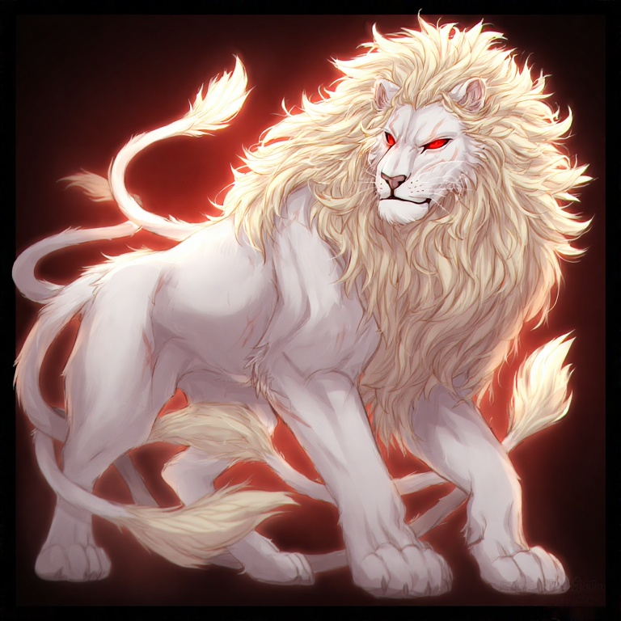

Vítr svištěl pustinou, nesoucí s sebou prach a šepoty zapomenutých příběhů. Právě tady, v srdci Ztracených Zemí, se rozkládala říše, jejíž krása byla stejně zarážející jako její temnota. Nebylo to místo pro slabé srdce. Vládlo zde prastaré znepřátelení, jehož kořeny sahaly hluboko do samotných základů světa. Uprostřed tohoto drsného království, v jeskyni vyřezané větrem a časem, spal král. Nebyl to obyčejný král. Bílý Král, jak ho znali, nebo spíše jak si ho pamatovali, byl obrovský, majestátní lev, jehož srst zářila oslnivou bělostí, ostře kontrastující s jeskynní tmou. Ze stínů jej propalovaly dva páry rudých očí, hlubokých a moudrých, plných tíhy tisíců let. A za ním, jako koruna, se táhly tři silné, svalnaté ocasy, pohybující se v rytmu pradávné síly. Lev se pohnul, jeho masivní tělo dopadlo s duněním na kamennou podlahu. Oči se mu otevřely, zářící temnou, živočišnou inteligencí. Byl unavený. Ne fyzicky, ale duševně. Tíha jeho věku na něm ležela jako kletba. Pamatoval si časy, kdy se země třásla pod kroky dinosaurů, kdy Ztracené Země kypěly životem, než je pohltila prastará válka. Válka s Panterem Necromancem./n Pomyslel na to jméno, a jeho chlupy se zježily. Necromant. Slovo, které evokovalo jen zlo a zkázu. Temnota, jež se plazila v stínech, hladová po pohlcení veškerého světla. Dávno tomu, když ještě mladý a plný naivity vládl Bílý Král Ztraceným Zemím. Tehdy byl jeho svět plný zázraků, rostlin, které svítily ve tmě, a tvorů, jejichž krása brala dech. Ale pak se objevil Necromant. Černý panter s chladnýma, modrýma očima, z nichž vyzařovala bezmezná touha po moci. Necromant chtěl ovládnout Ztracené Země, zotročit je a přetvořit k obrazu svému. Následovala válka. Krutá, vyčerpávající válka, která zničila krajinu a zanechala za sebou jen prach a popel. Bílý Král bojoval statečně, jeho tři ocasy bičovaly nepřítele a jeho zuby a drápy zasazovaly smrtící rány. Ale Necromant byl silný, temná magie mu propůjčovala moc, kterou Bílý Král nikdy neviděl. Přesto Bílý Král vyhrál. Ne silou, ale srdcem. Srdcem, které bylo plné lásky k jeho říši, srdcem ochotným se obětovat za její budoucnost. Porazil Necromanta, ale vítězství to bylo Pyrrhovo. Ztracené Země byly zničeny a Bílý Král byl vyčerpán do morku kostí. A teď, po tisících letech, cítil, jak se Necromant probouzí. Temnota se šířila, a Bílý Král věděl, že se musí znovu postavit svému odvěkému nepříteli.
